The final version of the Mario Bros Level Creator ended up having many interesting features.
General Set up
When the level creator is started the user is given a grid with the two bottom rows filled in.
This is the basic set up of a level. From here the user is able to edit the level to make it
whatever they want. One of the limitations is that the length of the level is fixed. At the
end of the level there is a flag pole and castle which signify the end of the level.
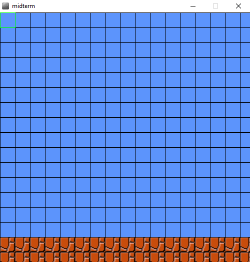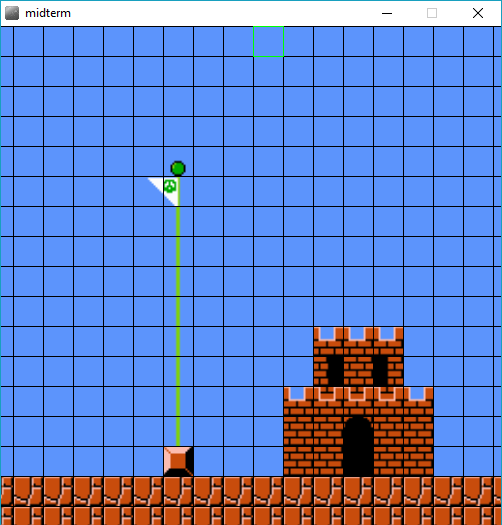
Insertion of Tiles
The user is able to insert the tiles using a menu. The menu is divided into background blocks
and collidable blocks (there is also a save level option which I will discuss later). The menu
can be brought up using the menu button on the controller (G if using a keyboard). Selections
are made using the action key in the middle of the directional pad on the controller (Space bar
if using a keyboard). There is also a back key on the controller (F if using a keyboard) to assist
with menu navigation. Once a block is selected the action key (Space bar on a keyboard) can be
used to place the block anywhere in the level. Using these blocks the user can create a full level.
The "?" blocks are also present in the block selection and differentiated by weather they produce
a coin or a mushroom. There are also blocks available which were not present in the original
iteration of the game.
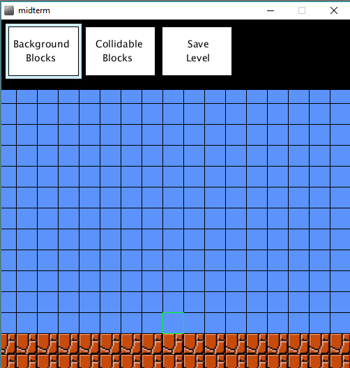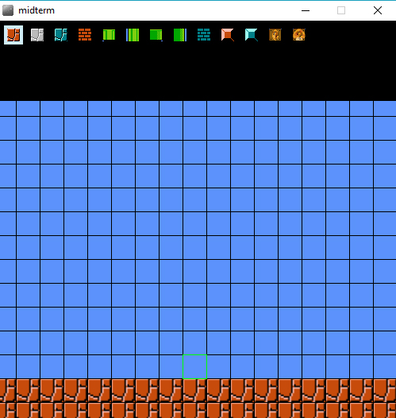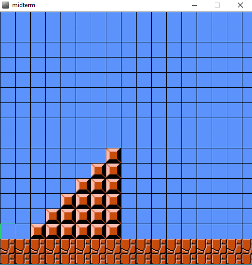
Saving the Level
The level can be saved by selecting the "Save Level" option in the menu. This will bring up a
screen which will let you type in a name for your level. It is important to keep in mind that
this process will overwrite any existing levels, so a level must be given a unique name.
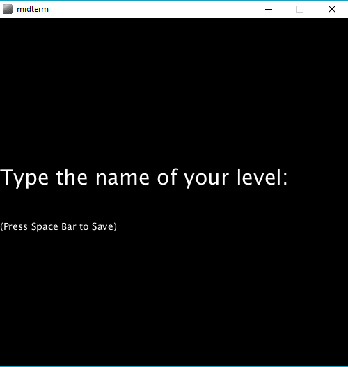
Loading Up a Level
Loading up a level is simple. Just press enter at the main screen and you will be presented with
a screen to enter the name of the level you want to play. A list of available levels is given and
the program will validate input to make sure that you are using an input which is valid.
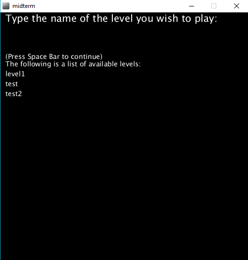
The Controller
The controller has a simple design. There are four directional arrows for navigating the grid and menus.
There is an action button in the center of the arrows which is used for making selections and placing blocks.
On the side there is a menu button and a back button which can be used to bring up the menu and navigate the
menu respectively.
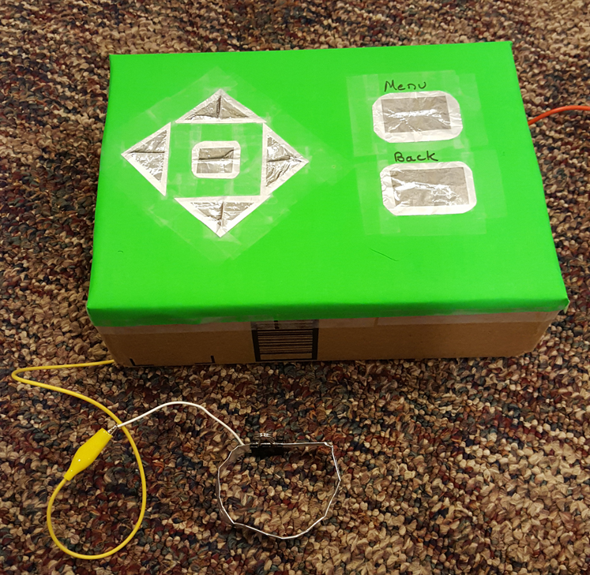
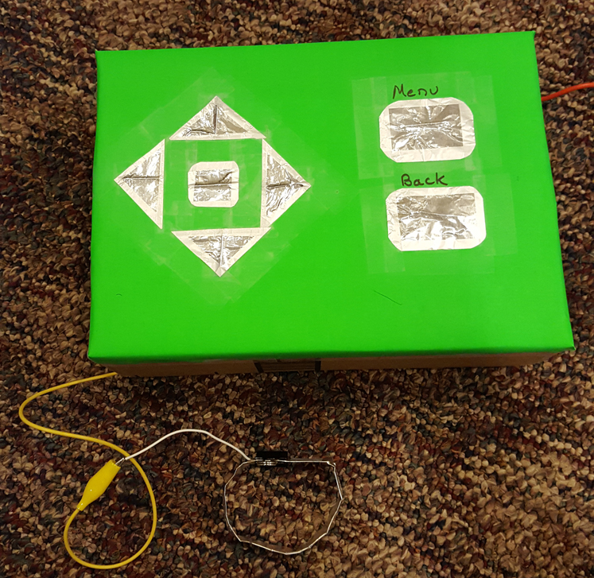
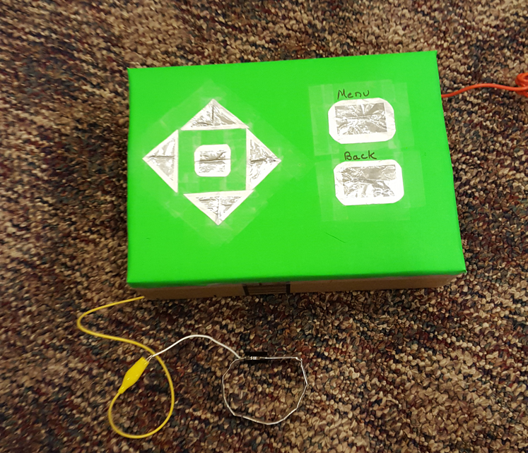
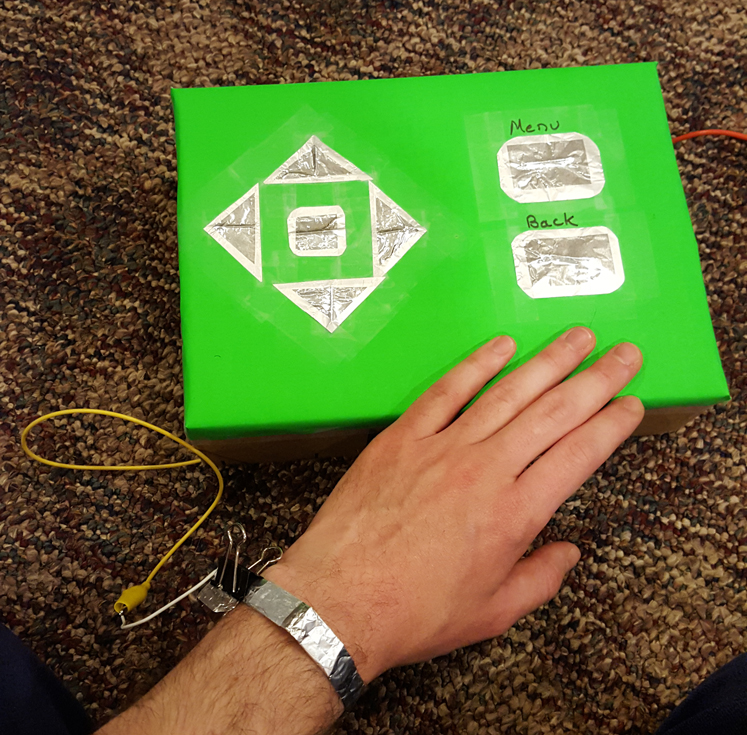
Video Demonstration
Here is a video demonstration of a level being created and played.